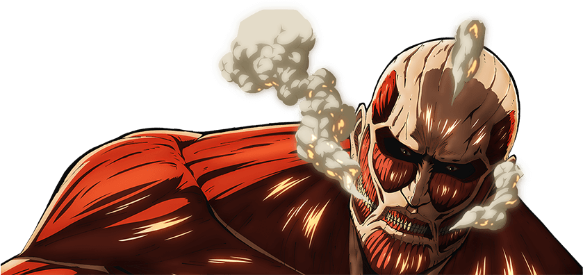

Sobre o site

Este site foi criado para a disciplina de Desenvolvimento Front-end, como parte da nota do semestre.
Teve como inspiração um anime chamado Shingeki no Kyojin.
Autor: Gabriel Neves Carneiro
Teve como inspiração um anime chamado Shingeki no Kyojin.
Autor: Gabriel Neves Carneiro